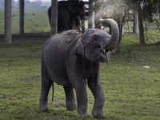

The African Savanna (Bush) elephant is the world's largest land animal – with adult males, or bull elephants, standing up to 3m high and weighing up to 6,000kg on average. Males only reach their full size at 35-40 years - that’s well over half their lifespan as wild elephants can live for up to 60-70 years. And it’s not just the adults – even calves are huge! At birth, a baby elephant can weigh 120kg - that’s almost 19 stone.
There are three species of elephant: African Savanna (Bush), African Forest and Asian. The ears of African elephants are much larger than their cousins and are described as being shaped like the African continent, whereas the ears of Asian elephants are shaped like the Indian subcontinent. There’s also a trunk difference - African elephants have two ‘fingers’ at the tip of their trunks, whereas Asian elephants have one.
Elephants have around 150,000 muscle units in their trunk. Their trunks are perhaps the most sensitive organ found in any mammal - Asian elephants have been seen to pick up a peanut, shell it, blow the shell out and eat the nut. Elephants use their trunks to suck up water to drink – it can contain up to 8 litres of water. They also use their trunks as a snorkel when swimming.
Elephant tusks are actually enlarged incisor teeth which first appear when elephants are around 2 years old. Tusks continue growing throughout their lives. Tusks are used to help with feeding - prising bark off trees or digging up roots - or as a defense when fighting. But these beautiful tusks often cause elephants danger. They're made from ivory; a much desired object. Read on to find out why elephants are under threat.
Elephants have many unexpected facts. Below are three more unexpected facts for elephants.
- Elephants eat grasses, leaves, shrubs, fruits and roots depending on the season and their habitat. When it’s particularly dry, elephants will eat more woody parts of trees and shrubs like twigs, branches and barks.
- They need to eat up to 150kg of food per day – that's around 375 tins of baked beans – although half of this may leave the body undigested.
- Elephants communicate in a variety of ways - including sounds like trumpet calls (some sounds are too low for people to hear), body language, touch and scent.
Elephants are very intresting animals to learn about. To learn more about these enormous and amazing animals, click here.